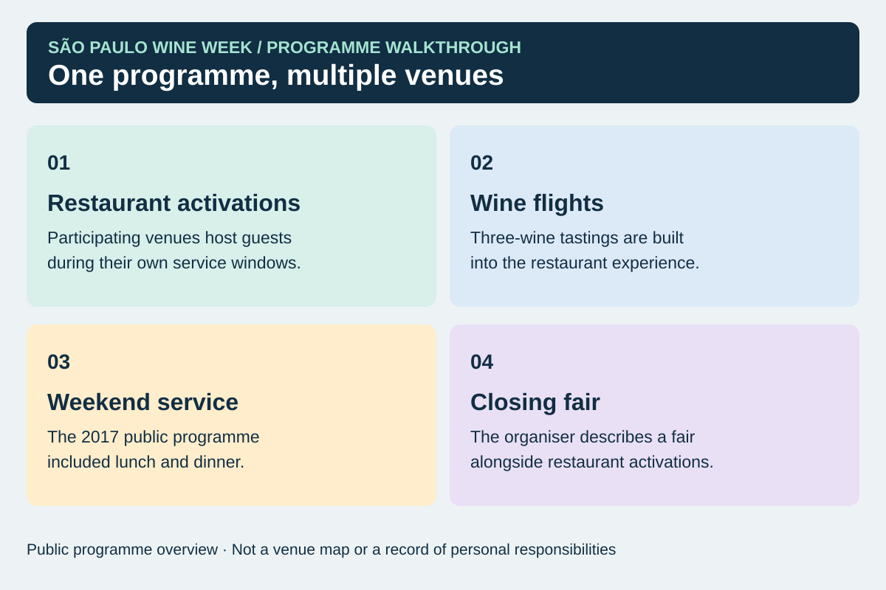

Format
Restaurant activations, dinners, pairings and a closing fair.
SÃO PAULO / WINE + HOSPITALITY
A selected event overview with the public programme and a project management framework for a distributed hospitality experience.
São Paulo Wine Week / Project managementSão Paulo Wine Week is part of my selected event work. This overview presents the public event format and programme.
Restaurant activations, dinners, pairings and a closing fair.
Wine Revolution lists the São Paulo project in its 2017–2018 portfolio.
A distributed event format links participating venues, communication and guest experience.

| Production step | Handoff | Example output |
|---|---|---|
| Publish the programme | Organiser to venue leads | Shared programme |
| Prepare each venue | Venue leads to floor teams | Venue briefing sheet |
| Run live service | Floor teams to organiser | Daily status and issue log |
| Transition to the fair | Restaurant teams to fair team | Closeout and handoff note |
| Programme reference | Activity |
|---|---|
| 5–9 June 2017 | Wine-flight experiences during dinner service |
| 10–11 June 2017 | Lunch and dinner experiences |
| Across participating restaurants | Three-wine tasting flights; service hours depended on the venue |
Programme reference: Selo 7 Sommeliers, May 2017.
For a programme delivered across restaurants and a fair, the management questions concern scope ownership, venue readiness, programme consistency and handoffs. These are a framework for exploring the event, rather than a claim about my personal responsibilities.
Wine Revolution describes São Paulo Wine Week as a combination of restaurant activations and a fair. Its portfolio lists 2017–2018.